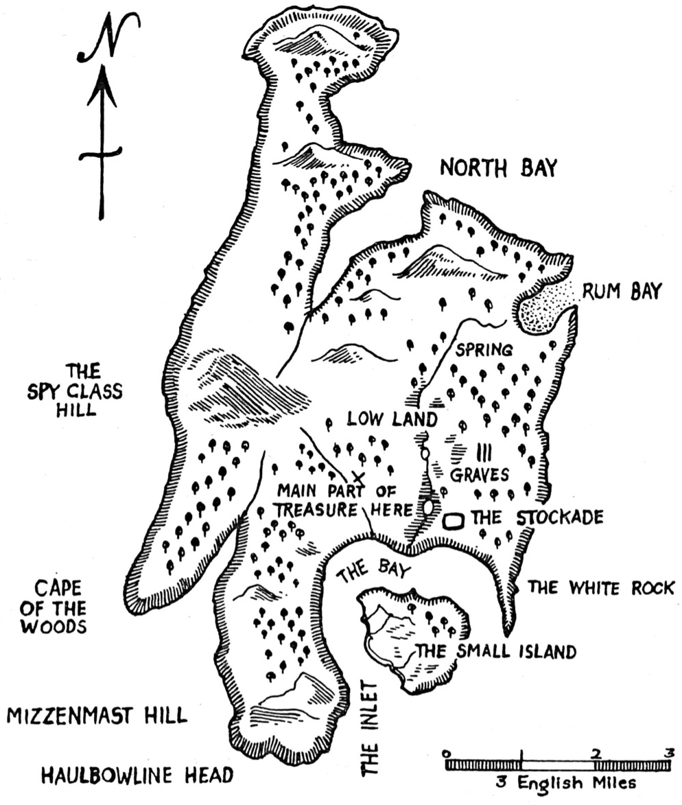

Six
THE CAPTAIN'S PAPERS
We rode hard all the way, till we came to Dr. Livesey's door. The house was all dark at the front.
Mr. Dance told me to jump down and knock. The door was opened almost at once by the maid.
"Is Dr. Livesey in?" I asked.
No, she said; he had come home in the afternoon, but had gone up to the Hall to have dinner and pass the evening with Mr. Trelawney.
"So there we go, boys," said Mr. Dance.
This time, as the distance was short, I did not mount, but ran holding on to the horse to the gates, and up the long, moonlit road to where the white line of the Hall buildings looked on either hand on great old gardens. Here, Mr. Dance dismounted, and, taking me along with him, went into the house.
The servant led us into a large room, full of books, in which Mr. Trelawney and Dr. Livesey sat, pipes in hand, on either side of a bright fire.
I had never seen Mr. Trelawney, the great man of our part of the country, so near at hand. He was a tall man, over six feet high, and broad too; and he had a strong face, all roughened and reddened and lined in his long travels. From his eyes I guessed that he had some temper—not bad, you would say, but quick and high.
"Come in, Mr. Dance," says he very gravely.
"Good evening, Dance," says the doctor, with a nod. "And good evening to you, friend Jim. What brings you here?"
Captain Dance stood up straight, and told his story like a lesson; and you should have seen how the two gentlemen leaned forward and looked at each other, and forgot to smoke in their surprise and interest.
At last Mr. Dance finished the story.
"Mr. Dance," said Mr. Trelawney, "you are a very noble fellow. And as for riding down that black pirate, Pew, I regard it as an excellent thing to have done. This lad Hawkins is a fine lad, I observe. Hawkins, will you ring that bell? Mr. Dance must have some wine."
"And so, Jim," said the doctor, "you have the thing that they were after, have you?"
"Here it is, sir," said I, and gave him the papers done up in cloth.
The doctor looked the thing all over, as if his fingers were eager to open it; but instead of doing that, he put it quietly in the pocket of his coat.
"When Dance has had his wine," he said, "he will have to leave us, for he has other duties; but I mean to keep Jim Hawkins here to sleep at my house. If you will allow it, I would like to have the cold meat brought so that he may get something to eat."
"As you like, Livesey," said Mr. Trelawney; "Hawkins has deserved better than cold meat."
So cold meat was brought in and put on a side-table, and I made a fine big supper, for I was very hungry. Mr. Dance drank his wine and departed.
"And now, sir," said the doctor.
"And now, Livesey," said Mr. Trelawney, in the same breath.
"One at a time, one at a time," laughed Dr. Livesey. "You have heard of this Flint, I suppose?"
"Heard of him!" cried he. "Heard of him, you say! He was the most blood-thirsty pirate that ever sailed. I was once on a ship at Trinidad; they saw Flint's sails and went straight back into port, sir!"
"Well, I've heard of him myself, in England," said the doctor. "But the point is, had he money?"
"Money!" cried Mr. Trelawney. "Have you heard the story? What were these pirates after but money? What do they care for but money? For what would they risk their foul bodies but money?"
"That we shall soon know," replied the doctor. "But you are so hot-headed and noisy that I cannot get a word in. What I want to know is this: Supposing that I have here in my pocket some paper showing where Flint hid his treasure, will that treasure amount to much?"
"Amount, sir!" cried Mr. Trelawney. "It will amount to this: if we have the paper you talk about, I'll fit out a ship at Bristol, and take you and Hawkins along, and I'll have that treasure if I search a year."
"Very well," said the doctor. "Now, then, if Jim agrees, we'll open the cover"; and he laid it before him on the table.
The papers were carefully packed up and he had to get his knife to cut it open. It contained two things—a book and a paper.
"First of all we'll try the book," said the doctor.
Mr. Trelawney and I were both peering over his shoulder as he opened it. On the first page, there were only some lines of writing, such as a man with a pen in his hand might make in play or for practice. One was the same as the mark on our captain's arm, "Billy Bones his fancy"; then there was "Mr. W. Bones", "No more rum", "Off Palm Key he got it!" and some other things, mostly single words. I could not help wondering who it was that had "got it", and what "it" was that he got: a knife in his back, I suppose.
"Not much help here," said Dr. Livesey, as he passed on.
The next ten or twelve pages were filled with a curious set of figures. There was a date at one end of the line, and at the other an amount of money, as in common account-books; but instead of any writing between the date and the figures, only a number of marks, XXX. On the 12 th of June, 1745, for example, seventy pounds was paid to someone, and there was nothing but six marks to explain the cause. In a few cases, to be sure, the name of a place would be added, as "Off Caracas".
The account extended over nearly twenty years, the amounts growing larger as time went on, and at the end the whole amount had been added up after five or six wrong attempts, and these words were written, "Bones, his lot."
"I can't understand this at all," said Dr. Livesey.
"The thing is as clear as noonday," cried Mr. Trelawney. "This is the black-hearted dog's account-book. The marks stand for the names of ships that they sank. The figures are the fellow's share, and where he feared a doubt you see he added something clearer. 'Off Caracas,' now; you see, here was some unhappy vessel attacked off that coast. God help the poor souls that were in her—dead long ago."
"Right!" said the doctor. "See what it is to be a traveller. Right! And the amounts increase, you see, as he rose in rank."
There was little else in the book but a few names of places written in the pages towards the end, and a list showing the value of French and of Spanish money in English money.
"Careful man!" cried the doctor. "He did not mean to lose any of his money."
"And now," said Mr. Trelawney, "for the other."
The doctor opened the paper with great care, and there fell out the map of an island, with lines showing its exact place on a map of the world, and figures telling how deep the sea was along its coast, also the names of hills, and bays, and everything that would be needed to bring a ship safely to its shores. The island was about nine miles long and five across, shaped, you might say, like some fat beast standing up. It had two fine harbours, and a hill in the centre part marked "The Spy-glass". There were several marks added at a later date; but, above all, three red marks—two on the north part of the island, one in the south-west, and, besides this last, in the same red ink, and in a different handwriting these words:
Main part of treasure here.
Over on the back the same person had written:
Tall-tree, Spy-glass shoulder, line to a point to the N. of N.N.E.
Island E.S.E. and by E.
Ten feet.
The bar silver is in the northern hiding-place; you can find it by the line of the eastern hill, sixty feet south of the black rock with the face on it.
The guns are easily found, in the sand-hill, N. point of north cape, on a line E. and a quarter N.
J. F.
That was all; but, little as it was and to me meaningless, it filled Mr. Trelawney and Dr. Livesey with delight.
"Livesey," said Mr. Trelawney, "you will give up this work of yours here at once. To-morrow I start for Bristol. In three weeks' time—three weeks!—two weeks—ten days—we'll have the best ship, sir, and the best crew in England. Hawkins shall come as ship's boy. You'll make a fine ship's boy, Hawkins. You, Livesey, are ship's doctor; I am captain. We'll take Redruth, Joyce and Hunter. We'll have a quick journey, and not the least difficulty in finding the spot, and money to eat—to roll in—to play with ever after."
"Trelawney," said the doctor, "I'll go with you; and, I feel sure that Jim will too, and be of real help. There's only one man I'm afraid of."
"And who's that?" cried Mr. Trelawney. "Name the dog, sir!"
"You," replied the doctor; "for you cannot hold your tongue. We are not the only men who know of this paper. These fellows who attacked the inn to-night—bold, fearless fighters, for sure—and the rest who stayed on board that boat, and more, I dare say, not far off, are one and all determined to get that money. We must none of us go alone till we get to sea. Jim and I shall stay together; you'll take Joyce and Hunter when you ride to Bristol; and, from first to last, not one of us must breathe a word of what we've found."
"Livesey," replied Mr. Trelawney, "you are always in the right. I'll be as silent as the grave."